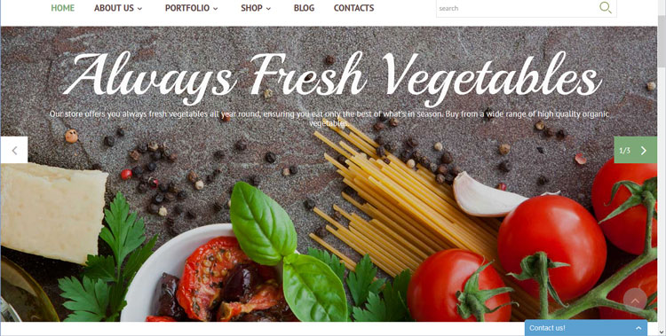

Welcome
It's through mistakes that you actually can grow. You have to get bad in order to get good. - Paula Scher
My name is Milissa A. McClelland and I am a Web Design & Development student at Full Sail University. This website has been created for my Web Standards Project class. It will showcase different website components that will be developed further throughout the class in the coming weeks.
Featured
Featured Component: Drop-down Navigation
What I hope to practice/learn.
Drop-down menus are a great way to simplify a navigation and rid it of clutter that would make it unappealing to the user. I've seen many different approaches to the drop-down menu and would like to further explore ways to improve upon what I already know about navigation creation.
How does this relate to what I've learned in WDD.
Creating a navigation is something gone over in most of the classes I've taken. How to create them and what elements are needed, and styling them using CSS. Even more in depth with using jQuery to create animation for each of the drop-down menus.
How Might I Build This?
- 1. Component contained in a <header>
- 2. Branding logo with <h1>
- 3. <nav> with <ul> with <li> and <a>for each of the categories of the navigation
- 4. Styled with CSS
- 5. jQuery maybe used to create animations
Style
Fonts: San-serif, Helvetica or maybe Roboto
Color: #43caca, #2f2f2f, #f34c49, #b2398a, #ebffff
Component: Call To Action
What I hope to practice/learn.
This CTA (Call-to-Action) features a search bar that, when bundled together with the promise of cheap textbooks, draws the user in to search for what ever text they may need. I hope to better create search bars in conjunction with the complete CTA.
How does this relate to what I've learned in WDD.
This relates to both the design and development classes that I've taken so far. Big, bold elements that are easy to read and have a clear picture of what they do follows what was taught in the design classes. CSS used to align and style the elements of the CTA.
How Might I Build This?
- 1. The component is created within a <section>
- 2. A wrapper <div>
- 3. <img> for cta image
- 4. The search box is contained in a <form> with <input>
- 5. CSS for styling
Component: Footer
What I hope to practice/learn.
Footers contain contacts, additional information, links to other websites, social media, and many other bits of information related to the website. Creating a pleasant, uncluttered footer that isn't jarring and confusing to the eye to be explored further.
How does this relate to what I've learned in WDD.
Design classes had taught to design with purpose. Big bold elements make for a better understanding and usability of the component. They styling of it is related to CSS.
How Might I Build This?
- 1. Contained in a <footer>
- 2. <ul> with <li> and <a> for each of the social media links
- 3. <p> for the © copyright
- 4. CSS for styling and alignment
Component: Employee About Section
What I hope to practice/learn.
The alignment of things is sometimes tricky for me, I do not seem to have quite grasped the concept of it yet. Things like when to use floats or just inline-block, are what I need to work on. I hope to gain a better understanding of the alignment of elements.
How does this relate to what I've learned in WDD.
Alignment and of elements was been taught in the intro class to HTML and CSS. The grouping of elements within sections and divs to create elements.
How Might I Build This?
- 1. The component is created within a <section>
- 2. Each profile would be contained within a <div>
- 3. Within would be <img>, <p>, and <a>
- 4. Styled with CSS for the alignment
Component: Image Slider

What I hope to practice/learn.
Image Sliders were one of the subjects of my last class. They serve as a way to display more content on a page without cluttering it. When combined with other elements like, CTA's and hero images, they make for dynamic and eye appealing components to a website. Further exploration into the subject and design needed.
How does this relate to what I've learned in WDD.
As already stated this was one of the many different components went over in a previous class. It incorporated not only HTML and CSS but jQuery as well. I feel that my skills in JavaScript subjects is something I need to work on more.
How Might I Build This?
- 1. Contained in a <div>
- 2. <a> for the next and prev controls
- 3. <ul> with <li> for each of the images
- 4. jQuery and CSS used for style and animation